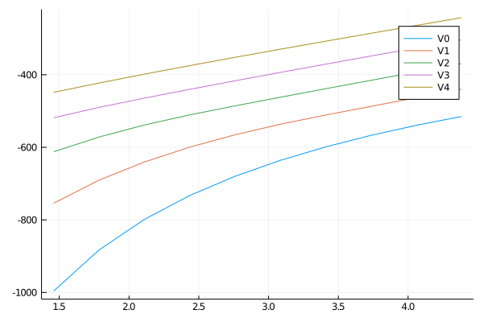
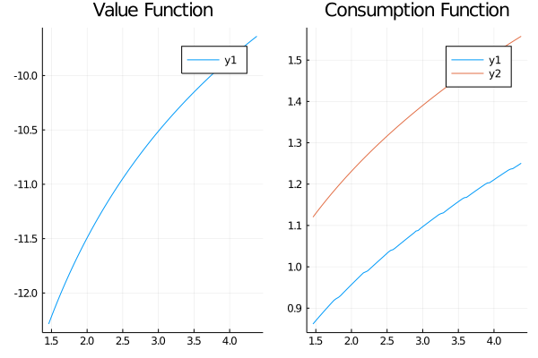
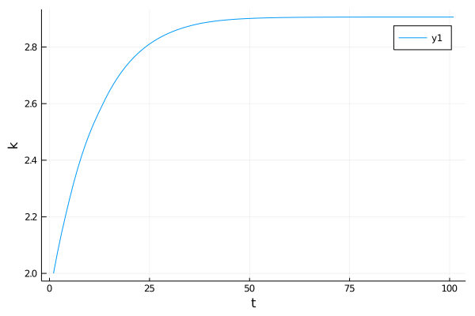

struct Param
α::Float64
β::Float64
γ::Float64
δ::Float64
end
p = Param(0.3, 0.96, 3.0, 0.1)Param(0.3, 0.96, 3.0, 0.1)We consider here, another deterministic version of the neoclassical growth model, but propose a slightly different solution method.
A representative agent uses capital \(k_t\) to produce \(y_t\) using the following production function:
\[y_t = k_t^{\alpha}\]
He chooses to consume an amount \(c_t \in ]0, y_t]\) and invests what remains: \[i_t = y_t - c_t\].
He accumulates capital \(k_t\) according to:
\[k_{t+1} = \left( 1-\delta \right) k_{t} + i_{t}\]
where \(\delta\) is the depreciation rate and \(i_t\) is the amount invested.
The goal of the representative agent is to maximize:
\[\sum_{t\geq 0} \beta^t U(c_t)\]
where \(U(x)=\frac{x^{1-\gamma}}{1-\gamma}\) and \(\beta<1\) is the discount factor.
Since the problem is time homogenous, the value function depends on available capital only and satisfies the following Bellman equation:
\[V\left(\underbrace{k}_{k_t}\right) = \max_{c\in[0,1[} U(c) + \beta V\left(\underbrace{(1-\delta)k + \underbrace{(k^{\alpha}-c)}_{y_{t+1}}}_{k_{t+1}}\right)\]
Our goal is to obtain a smooth approximation of \(k\) and \(V\) by using interpolations techniques.
For this model, using the dynamic first-order conditions, one can show the deterministic steady-state of the model satisfies \(1=\beta \left( (1-\delta) + \alpha k^{\alpha -1} \right)\).
Create a suitable Parameter type to hold the parameters. Write a function steady_state(p::Parameter) to compute the steady-state capital kbar and the corresponding steady-state consumption cbar
struct Param
α::Float64
β::Float64
γ::Float64
δ::Float64
end
p = Param(0.3, 0.96, 3.0, 0.1)Param(0.3, 0.96, 3.0, 0.1)Set \(N=10\) and define a reasonable grid kgrid=range(kmin, kmax; length=N) to approximate capital \(k\).
kbar = ((1/p.β-(1-p.δ))/p.α)^(1/(p.α-1))
kmin = kbar*0.5
kmax = kbar*1.5
N = 10
kgrid = range(kmin, kmax, length=N)1.4604110749820356:0.3245357944404524:4.381233224946107The unknown value function is represented as a N elements arrays. Define Vi(k,p)=U(δ * k^α)/(1-𝛽) and compute the initial guess V0 = [Vi(k,p) for k in kgrid]. Define a finer grid ktest=range(kmin, kmax;length=1000) and find the values of Vi on it by using Interpolations.jl library to interpolate V0 between the points of kgrid.
U(x,p) = x^(1-p.γ)/(1-p.γ)
Vi(k,p) = U(p.δ*k^p.α, p)/(1-p.β)
V0 = [Vi(k,p) for k in kgrid]10-element Array{Float64,1}:
-995.9211200566681
-882.947409942106
-798.7381657686765
-733.0197777589988
-679.9877597810237
-636.0895889952973
-599.0166185093636
-567.1967665973841
-539.5186262896792
-515.1719273762558Compute a Bellman improvement function bellman(V0::Vector{Float64}, p::Parameter, kgrid)::Tuple{Vector{Float64}, Vector{Float64}} which does the following steps:
take an initial guess V0 for the value function
at each grid point from kvec, optimize nonlinearly, the function \(c \rightarrow U(c) + \beta V\left((1-\delta)k + (k^{\alpha}-c)\right)\) for each capital level in the grid kvec. In this expression the function V() interpolates V0 defined on kvec on any point k so that the resulting function is continuous.
return the updated value and investment rules
using Interpolations
using Optimfunction Bellman_step(V0, p, kgrid)
V1 = copy(V0)
c1 = copy(V0) #ill contain the policy
for (i,k) in enumerate(kgrid)
V = LinearInterpolation(kgrid, V0, extrapolation_bc = Line()) # a function representing value function tomorrow
fobj(c) = U(c,p) + p.β*V((1-p.δ)*k + k^p.α - c)
c0 = k^p.α - p.δ*k # initial guess for consumption
upper = 0.99 * k^p.α
lower = 0.01 * k^p.α
ff(x) = fobj(x[1])
res = optimize( x-> -fobj(x[1]), lower, upper)
c = res.minimizer[1]
c1[i] = c
V1[i] = fobj(c)
end
return (V1, c1)
endBellman_step (generic function with 1 method)V1, c1 = Bellman_step(V0, p, kgrid)
V2, c2 = Bellman_step(V1, p, kgrid)
V3, c3 = Bellman_step(V2, p, kgrid)
V4, c4 = Bellman_step(V3, p, kgrid);using Plots
pl = plot(kgrid, V0, label="V0")
plot!(pl, kgrid, V1, label="V1")
plot!(pl, kgrid, V2, label="V2")
plot!(pl, kgrid, V3, label="V3")
plot!(pl, kgrid, V4, label="V4")
It looks like the value function is increasing for each Bellman iteration
Write a value interation function vfi(N, p) which solves the model defined by parameter p using the value function algorithm. The function should return the value function and the policy rule.
function vfi(N,p; maxit=1000, tol_η=1e-8)
# we need to recompute steady-state and grid
kbar = ((1/p.β-(1-p.δ))/p.α)^(1/(p.α-1))
kmin = kbar*0.5
kmax = kbar*1.5
kgrid = range(kmin, kmax, length=N)
V0 = [Vi(k,p) for k in kgrid]
for it in 1:maxit
V1, g = Bellman_step(V0, p, kgrid)
η = maximum(abs, V1-V0)
if η<tol_η
println("Converged in ", it, " iterations.")
return V1, g, kgrid
end
V0 = V1
end
endvfi (generic function with 1 method)V, g, kgrid = vfi(100, p)Converged in 579 iterations.([-12.284696324827294, -12.233466984901407, -12.183351581168345, -12.134304424908217, -12.086281770578337, -12.039246797400809, -11.993165043287126, -11.947998482407991, -11.903711649193802, -11.860281312245426 … -9.78014286348344, -9.76392135969434, -9.747828327942445, -9.731860024257765, -9.716015379789836, -9.700302231280908, -9.684712441327154, -9.66923947910022, -9.653882150927988, -9.638644151389284], [0.8617557426872218, 0.8677459495546024, 0.8736883974418759, 0.8795500327976118, 0.8853357747531365, 0.8911178993376998, 0.8968360678929151, 0.9024391361956954, 0.9080867938024182, 0.9136773225901392 … 1.2240725267427135, 1.2274647493498698, 1.2307640008729817, 1.234054863961997, 1.2364005039097425, 1.2373783837207846, 1.2406623463570334, 1.243884226955254, 1.2471118076875662, 1.250581000615372], 1.4604110749820356:0.029503254040041126:4.381233224946107)Plot the solution. Comment.
pl1 = plot(kgrid, V, title="Value Function")
pl2 = plot(kgrid, g, title="Consumption Function")
plot!(pl2, kgrid, kgrid.^p.α, title="Consumption Function")
plot(pl1, pl2)
Bonus 1: plot a graph showing the convergence back to the steady-state
function simulate(k0, c0, kgrid, p, T=100)
# Consumption fule:
c = LinearInterpolation(kgrid, c0, extrapolation_bc = Line()) # a function representing consumption rule
sim = [k0]
for t=1:100
k = sim[end]
y = k^p.α
i = y - c(k)
kk = (1-p.δ)*k + i
push!(sim, kk)
end
return sim
endsimulate (generic function with 2 methods)sim = simulate(2.0, g, kgrid, p);
plot(sim, xlabel="t", ylabel="k")
Bonus 2: implement the policy iteration algorithm by adding an evaluation step in the vfi function.
function evaluate_policy(g, kgrid, p)
end